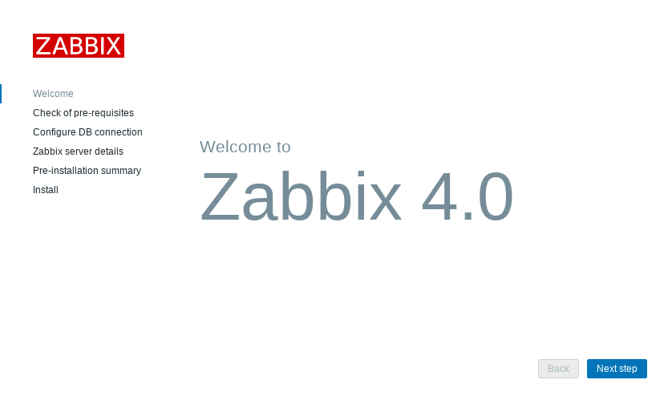

# rpm -ivh https://repo.zabbix.com/zabbix/4.0/rhel/7/x86_64/zabbix-release-4.0-1.el7.noarch.rpm
# subscription-manager repos --enable="rhel-7-server-extras-rpms"
# subscription-manager repos --enable="rhel-7-server-optional-rpms"zabbix
Table of Contents
RHEL 7 上安装
1. 准备 yum 源
|
Note
|
参照 官方安装链接。 |
2. 安装 Zabbix server, Zabbix proxy, Zabbix frontend
# yum install zabbix-server-mysql
# yum install zabbix-proxy-mysql
# yum install zabbix-web-mysql3. 创建 Mysql 并数据导入
# yum groupinstall mariadb mariadb-client -y
# systemctl start mariadb
# systemctl enable mariadb
# mysql -uroot -p
MariaDB [(none)]> create database zabbix character set utf8 collate utf8_bin;
MariaDB [(none)]> grant all privileges on zabbix.* to zabbix@localhost identified by 'redhat';
MariaDB [(none)]> create database zabbixproxy character set utf8 collate utf8_bin;
MariaDB [(none)]> grant all privileges on zabbixproxy.* to zabbixproxy@localhost identified by 'redhat';
# zcat /usr/share/doc/zabbix-server-mysql-4.0.1/create.sql.gz | mysql -uzabbix -predhat zabbix
# zcat /usr/share/doc/zabbix-proxy-mysql-4.0.1/schema.sql.gz | mysql -uzabbixproxy -predhat zabbixproxy4. 编辑 /etc/zabbix/zabbix_server.conf 和 /etc/zabbix/zabbix_proxy.conf，设定数据库连接参数
# vim /etc/zabbix/zabbix_server.conf
DBHost=localhost
DBName=zabbix
DBUser=zabbix
DBPassword=redhat
# vim /etc/zabbix/zabbix_proxy.conf
DBHost=localhost
DBName=zabbixproxy
DBUser=zabbixproxy
DBPassword=redhat5. 启动 Zabbix server
# systemctl start zabbix-server
# systemctl enable zabbix-server6. 编辑 /etc/httpd/conf.d/zabbix.conf 配置时区
php_value max_execution_time 300
php_value memory_limit 128M
php_value post_max_size 16M
php_value upload_max_filesize 2M
php_value max_input_time 300
php_value max_input_vars 10000
php_value always_populate_raw_post_data -1
php_value date.timezone Asia/Shanghai7. 重起 httpd
# systemctl restart httpd8. 安装配置 Agent
# yum install zabbix-agent -y
# systemctl start zabbix-agent && systemctl enable zabbix-agent
# vim /etc/zabbix/zabbix_agentd.conf
Server=10.66.208.1429. Java gateway 配置
# yum install zabbix-java-gateway|
Note
|
详细关于配置 Java gateway 参照 官方链接。 |
10. 使用 http://your-server-IP/zabbix, 管理员用户 Admin/zabbix 登录，会定位到 setup 界面，根据提示进行设置。

基本操作
添加用户
访问 Administration → Users，点击 Create user 开始添加用户。
添加被管理主机
访问 Configuration → Hosts，点击 Create host 开始添加被管理主机。
添加被管理条目
访问 Configuration → Hosts，在被管理主机列表中点击 Items，点击 Create item 开始添加被管理条目。